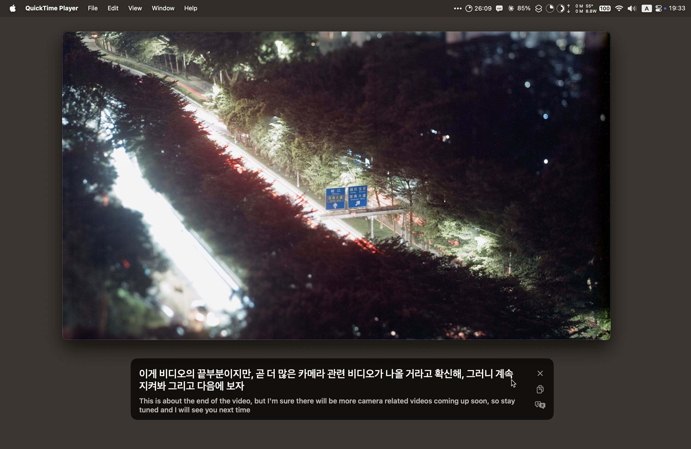

Parakeet
Live captions for everything your Mac plays: videos, calls, podcasts. Translated as you listen, and all on your Mac.

What it does
-
Captions for any app
Whatever makes sound gets captions, in a floating box you can drag anywhere. It hides itself when nothing is speaking.
-
About 30 languages
Korean, Japanese, English and many more, detected on their own. No need to pick one first.
-
Translation
Pick one of about 20 languages and the translation shows large, with the original underneath.
-
Stays on your Mac
Speech recognition runs on the Neural Engine and translation uses Apple's on-device models. No audio or text leaves your Mac.
-
Barely uses power
About 0.12 W and a tenth of one CPU core while captioning; about 1 mW when nothing is playing.
-
Out of the way
Lives in the menu bar. Toggle captions with ⌘L or from a terminal, and it updates itself.
First launch
- Open
Parakeet.dmgand drag Parakeet into Applications. - Parakeet isn't notarized by Apple, so macOS blocks the first launch. Go to System Settings → Privacy & Security and click Open Anyway.
- The welcome window asks for permission to hear system audio, then downloads the speech model (about 640 MB).